전자계산기기능사 (2002-10-06 기출문제)
1과목: 전기전자공학
1. 정류기의 평활회로는 어느 것에 속하는가?
- 고역여파기
- 저역여파기
- 대역여파기
- 저항감쇠기
(정답률: 69%)

2. 그림과 같은 회로에서 (복원중)를 안정도지수라 하는데 안정도지수가 어떤 값을 가질 때 안정도가 가장 높은가?(문제 오류로 복원중입니다. 정답은 1번입니다. 여기서는 1번을 누르면 정답 처리 됩니다.)
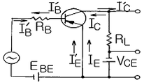
- 1
- 3.14
- 9
- 10
(정답률: 70%)
3. 증폭회로의 결합방식에서 가장 큰 전력이득을 얻을 수 있는 것은?
- 직결합
- RC결합
- 임피던스 결합
- 변압기 결합
(정답률: 24%)
4. 이상적인 상태에서 100% 변조된 AM파는 무변조파에 비하여 출력이 몇 배로 되는가?
- 1
- 1.5
- 2
- 100
(정답률: 54%)
5. 그림과 같은 회로는?
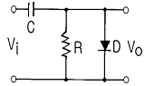
- 클램프회로
- 클리핑회로
- 피킹회로
- 트랩회로
(정답률: 60%)
6. 어떤 콘덴서의 정전용량 1㎌에 각주파수가 120π[rad/s] 인 전압 60V를 가할 때 콘덴서에 흐르는 전류는 몇 A인가?
- 2.26×10-1
- 2.26×10-2
- 2.26×10-3
- 2.26×10-4
(정답률: 48%)
7. 정류회로의 직류전압이 Vd , 리플의 (＋)최대값에서 (-) 최대값까지의 값(p-p값)이 V라면 리플함유율은?
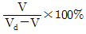
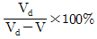
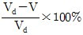
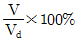
(정답률: 36%)
8. 동위상 신호제거비(CMRR)에 해당되는 것은?
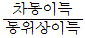
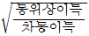
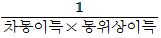
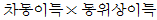
(정답률: 66%)
9. 초음파발진기로서 어군탐지기나 측심기 등에 가장 많이 사용되는 발진회로는?
- 자기 일그러짐 발진회로
- 음차 발진회로
- 부성저항 발진회로
- 수정 발진회로
(정답률: 40%)
10. 슈미트 트리거(schmitt trigger)회로는?
- 톱니파 발생회로
- 계단파 발생회로
- 구형파 발생회로
- 삼각파 발생회로
(정답률: 51%)
2과목: 전자계산기구조
11. 컴퓨터가 중간변환 과정 없이 직접 이해할 수 있는 것은?
- Machine Language
- Assembly Language
- ALGOL
- C Language
(정답률: 60%)
12. 자료가 리스트에 첨가되는 순서에서 그 반대의 순서대로만 처리 가능한 것을 LIFO 리스트라 하는데 이것을 무엇이라 부르는가?
- 큐(Queue)
- 스택(Stack)
- 데크(Deque)
- 피포(FIFO)
(정답률: 68%)
13. 512×8 bit EAROM 의 총 용량은 몇 bit인가?
- 8bit
- 512bit
- 4Kbit
- 8Kbit
(정답률: 75%)
14. 고정 소수점 표현 방식이 아닌 것은?
- 부호와 절대치 표현
- 1의 보수에 의한 표현
- 2의 보수에 의한 표현
- 9의 보수에 의한 표현
(정답률: 84%)
15. 일부분의 비트 또는 문자를 지울 때 사용하는 연산은?
- OR
- AND
- MOVE
- SHIFT
(정답률: 71%)
16. 중앙 연산처리 장치에서 마이크로 동작(Micro Operation)이 순서적으로 일어나게 하기 위하여 필요한 것은?
- 제어신호
- 스위치
- 레지스터
- 메모리
(정답률: 58%)
17. 16bit의 주소버스는 메모리 지정을 얼마나 분리시킬 수 있는가?
- 16Kbit
- 64Kbit
- 254Kbit
- 1Mbit
(정답률: 55%)
18. 프로그램은 일의 처리 순서를 기술한 명령의 집합이다. 각 명령은 어떻게 구성되어 있는가?
- 오퍼레이션과 오퍼랜드
- 명령코드와 실행 프로그램
- 오퍼랜드와 제어 프로그램
- 오퍼랜드와 목적 프로그램
(정답률: 67%)
19. 입·출력장치와 CPU의 실행 속도차를 줄이기 위해 사용하는 것은?
- Parallel I/O Device
- Channel
- Cycle steal
- DMA
(정답률: 77%)
20. 멀티플렉서 채널과 셀렉터 채널의 차이는?
- I/O 장치의 크기
- I/O 장치의 주기억장치 연결
- I/O 장치의 속도
- I/O 장치 용량
(정답률: 54%)
21. 통신로 중에서 양방향으로 전송을 행할 수 있지만 한 시점에서는 한 방향만으로 전송 되는 통신방식은?
- 반2중 통신방식
- 전2중 통신방식
- 단방향 통신방식
- 폴링(Polling) 통신방식
(정답률: 60%)
22. 패리티 규칙으로 코드의 내용을 검사하며, 잘못된 비트를 찾아서 수정할 수 있는 코드는?
- GRAY CODE
- EXCESS-3 CODE
- BIQUINARY CODE
- HAMMING CODE
(정답률: 78%)
23. 연산 회로에 해당되지 않는 것은?
- 메모리 회로
- 산술 연산 회로
- 논리 연산 회로
- 시프트 회로
(정답률: 68%)
24. 기억장치 내에 기억된 데이터를 읽을 때 읽고자 하는 자료의 어드레스를 임시로 기억하는 장치는?
- 주소 레지스터
- 기억 레지스터
- 명령 레지스터
- 데이터 레지스터
(정답률: 40%)
25. 보조기억장치(하드디스크)의 전체 용량을 주기억장치인 것처럼 사용하는 형태로 기억공간을 확대하여 사용하는 메모리는?
- RAM
- ROM
- Flash Memory
- Virtual Memory
(정답률: 43%)
26. 하드웨어(H/W)적 요인에 의한 인터럽트가 아닌 것은?
- 정전
- 외부 인터럽트
- 입·출력 인터럽트
- 프로그램 검사 인터럽트
(정답률: 37%)
27. 다음의 논리함수를 최소화하면?
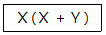
- Ｘ
- Ｙ
- ＸＹ
- Ｘ＋Ｙ
(정답률: 49%)
28. 마이크로프로세서가 주변 소자들과 데이터 교환을 위한 통로로 사용되는 3대 시스템 버스가 아닌 것은?
- 제어(Control) 버스
- 데이터(Data) 버스
- 입·출력(I/O) 버스
- 주소(Address) 버스
(정답률: 53%)
29. 데이터를 일시적으로 기억하는 레지스터는 무엇으로 구성되는가?
- 디코더
- 증폭회로
- 연산회로
- 플립플롭
(정답률: 78%)
30. 컴퓨터나 단말기 내부에서 사용하는 디지털 신호를 전송하기에 편리한 아날로그 신호로 변화시켜주고, 전송 받은 아날로그 신호를 다시 컴퓨터에서 사용되는 디지털 신호로 변환시켜 주는 장치는?
- 단말기
- 모뎀
- 통신 회선
- 통신제어 장치
(정답률: 81%)
3과목: 프로그래밍일반
31. 다음 ( )에 알맞은 내용으로 짝지어진 것은?
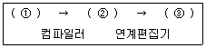
- ①원시프로그램, ②목적프로그램, ③실행프로그램
- ①목적프로그램, ②실행프로그램, ③원시프로그램
- ①원시프로그램, ②실행프로그램, ③목적프로그램
- ①실행프로그램, ②목적프로그램, ③원시프로그램
(정답률: 81%)
32. C 언어에서 사용되는 이스케이프 시퀀스에 대한 설명으로 옳지 않은 것은?
- \r : carriage return
- \t : tab
- \b : backspace
- \n : null character
(정답률: 57%)
33. 프로그램 개발 과정에서 프로그램 안에 내재해 있는 논리적 오류를 발견하고 수정하는 작업은?
- debugging
- loading
- linking
- mapping
(정답률: 88%)
34. 일괄처리 시스템에 가장 적합한 업무는?
- 급여 계산 업무
- 승차권 예약 업무
- 입·출금 조회 업무
- 본·지점 거래내역 업무
(정답률: 64%)
35. 두개 이상의 프로세스들이 다른 프로세스가 차지하고 있는 자원을 무한정 기다림에 따라 프로세스의 진행이 중단 되는 상태는?
- deadlock
- relocation
- spooling
- swapping
(정답률: 75%)
36. 프로그래밍 절차 중 문제 분석 단계에서 이루어져야 할 작업으로 거리가 먼 것은?
- 프로그램 설계
- 전산화의 타당성 검사
- 프로그래밍 작업의 문제 정의
- 입/출력 및 자료의 개괄적 검토
(정답률: 42%)
37. 구조적 프로그래밍 기법에서 배제되는 문은?
- IF 문
- STOP 문
- CASE 문
- GOTO 문
(정답률: 71%)
38. 인터프리터 언어에 해당하는 것은?
- FORTRAN
- COBOL
- BASIC
- PASCAL
(정답률: 69%)
39. C 언어의 기억클래스(storage class)에 해당하지 않는 것은?
- 내부 변수(internal variable)
- 자동 변수(automatic variable)
- 정적 변수(static variable)
- 레지스터 변수(register variable)
(정답률: 63%)
40. 운영체제를 기능상 분류했을 때 제어(control) 프로그램에 해당하는 것은?
- 감시(supervisor) 프로그램
- 언어 번역(language translator) 프로그램
- 서비스(service) 프로그램
- 문제(problem) 프로그램
(정답률: 47%)
4과목: 디지털공학
41. 2진수 101101을 10진수로 옳게 고친 것은?
- 41
- 43
- 45
- 47
(정답률: 76%)
42. 10진-2진 부호기(인코더)에서 입력선이 10개일 때 출력선은 최소 몇 개이어야 하는가?
- 2
- 3
- 4
- 10
(정답률: 58%)
43. 다음 그림에서 출력 X를 불 대수로 표시하면?
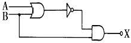
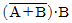
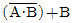
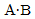
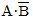
(정답률: 70%)
44. 마스터슬레이브 플립플롭(MASTER-SLAVE FF)은 클럭 펄스(CLOCK PULSE)가 상승할 때 정보를 기억 시켰다가 하강할 때 정보를 처리(NEGATIVE GOING)하도록 장치되었다. 그 장점은?
- 처리 시간이 짧아진다.
- 폭주(RACE AROUND)를 막는다.
- 동기 시킬 수 있다.
- 게이트 수를 줄일 수 있다.
(정답률: 58%)
45. 디지털 순서회로의 대표적인 중규모 집적회로(MSI)는 레지스터, 카운터, 메모리 장치 등이다. 이러한 회로를 구성하는 가장 기본적인 순서회로는?
- 가산기
- 플립플롭
- 조합논리 게이트
- 디코더
(정답률: 71%)
46. 디지털 신호를 아날로그 신호로 변환하는 장치를 무엇이 라고 하는가?
- A/D 변환기
- D/A 변환기
- 해독기(Decoder)
- 비교 회로
(정답률: 85%)
47. 순서 논리 회로의 기본 구성은?
- 반가산 회로와 AND 게이트
- 전가산 회로와 AND 게이트
- 조합 논리 회로와 논리 소자
- 조합 논리 회로와 기억 소자
(정답률: 38%)
48. 다음 논리식을 간소화한 것은?
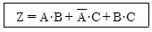
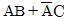
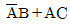
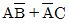
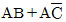
(정답률: 43%)
49. A=1, B=0, C=1 일 때 논리식의 값이 0이 되는 것은?
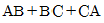
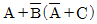
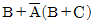
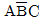
(정답률: 55%)
50. 인버터(inverter) 회로라고 부르는 회로는?
- 부정(NOT) 회로
- 논리합(OR) 회로
- 논리곱(AND) 회로
- 배타적(XOR) 회로
(정답률: 59%)
51. A와 B를 입력이라 하고 C0를 Carry, S를 Sum으로 반가산기 회로를 그림과 같이 구성 할 때 □ 안에 들어갈 게이트는?
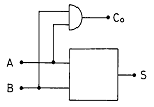
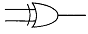
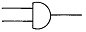
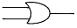
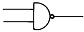
(정답률: 64%)
52. 입력 신호를 부호화 하는 회로는?
- 인코더
- 디코더
- 카운터
- 레지스터
(정답률: 51%)
53. 클록 펄스 파형이 "0" 상태에서 "1" 상태로 변하는 구간은?
- 인에이블 상태
- 디즈에이블 상태
- 상승 에지
- 하강 에지
(정답률: 62%)
54. 링 계수기(ring counter)의 회로 구성으로 옳은 것은?
- 최종 플립플롭의 출력을 최초 플립플롭의 J에 연결
- 최종 플립플롭의 출력을 최초 플립플롭의 K에 연결
- 최초 플립플롭의 출력을 최종 플립플롭의 J에 연결
- 최초 플립플롭의 출력을 최종 플립플롭의 K에 연결
(정답률: 44%)
55. 데이터 전송 시 발생할 수 있는 착오를 검출하고 교정이 가능한 코드는?
- 패리티 부호
- 해밍 부호
- 그레이 코드
- BCD 코드
(정답률: 78%)
56. 다음 불 대수의 기본 정리 중 옳은 것은?
- A+0=0
- A+A'=A
- A+A=0
- A+1=1
(정답률: 59%)
57. 다음의 게이트 회로가 수행하는 논리식은?
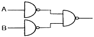
- A+B
- AㆍB
- A'+B'
- A'ㆍB'
(정답률: 41%)
58. 2진수 01101의 2의 보수는?
- 10010
- 10001
- 10011
- 01110
(정답률: 82%)
59. 하나의 입력 단자만을 가지며, 입력된 것과 동일한 결과를 출력하며, 어떤 내용의 일시적 보존이나 신호 지연에 사용할 수 있는 플립플롭은?
- RS 플립플롭
- JK 플립플롭
- D 플립플롭
- T 플립플롭
(정답률: 74%)
60. 동기형 계수 회로의 설명 중 옳지 않은 것은?
- 병렬 계수기라고도 한다.
- 리플 계수기 보다 속도가 빠르다.
- 해독기를 사용할 때 펄스의 일그러짐이 크다.
- 하나의 공통된 클록 펄스에 의해서 플립플롭들이 트리거 된다.
(정답률: 41%)